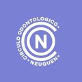
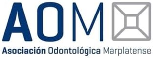
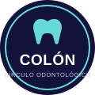
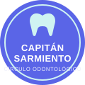

Todas las obras sociales en una única pantalla
Integración y validación de todas las obras sociales en la misma plataforma.
Creada para instituciones odontológicas
Odonapp digitaliza y centraliza la gestión de prestaciones para construir una experiencia más simple, ágil y trazable para la institución y sus asociados.
+750 odontólogos ya gestionan sus prestaciones con Odonapp



Círculo Odontológico de Colón
Círculo Odontológico de Capitán Sarmiento01Qué es Odonapp
Odonapp es una plataforma desarrollada para acompañar la transformación digital de las instituciones odontológicas, simplificando procesos administrativos y centralizando la información necesaria para gestionar las prestaciones de sus asociados.
Integra en un mismo entorno digital información, prestaciones, normas y aranceles de obras sociales, para construir un circuito administrativo más organizado y trazable.
La gestión de prestaciones pasa a un entorno digital, facilitando el acceso y la organización de la información.
La información necesaria para la gestión se encuentra organizada en un mismo lugar.
Procesos cotidianos más ágiles para el equipo administrativo y los profesionales.
Mayor visibilidad sobre el circuito de cada prestación y la información asociada.
El equipo puede dedicar más tiempo a iniciativas que generan valor para los asociados: capacitaciones, eventos, atención y nuevos proyectos institucionales.
Funcionalidades
Integración y validación de todas las obras sociales en la misma plataforma.
Según las normas de trabajo de cada obra social: solo podés cargar lo que vas a cobrar.
De la ficha a una gestión que evoluciona.
02El valor
La transformación digital genera valor en distintos niveles de la institución.
Mayor acceso a la información necesaria para gestionar sus prestaciones y una institución con mejores herramientas para acompañar su actividad profesional.
Información centralizada, procesos digitalizados y mayor trazabilidad para simplificar el trabajo cotidiano.
La tecnología permite, además, que las personas puedan dedicar mayor capacidad a tareas que aportan valor a la institución y sus asociados.
Una gestión moderna, organizada y capaz de acompañar las necesidades actuales y futuras de sus asociados.
Porque modernizar la gestión también es una manera concreta de generar valor y construir legado institucional.
03Cómo lo hacemos
Cada institución tiene su propia historia, dinámica de trabajo y realidad operativa. Por eso, la incorporación de Odonapp comienza entendiendo cómo funciona la institución y continúa acompañando a las personas que van a utilizar la plataforma.
Conocemos la operación de la institución, sus procesos y necesidades.
Preparamos el sistema de acuerdo con la realidad de la institución.
Acompañamos al equipo para facilitar la incorporación de la plataforma a su dinámica cotidiana.
Comenzamos a operar con Odonapp y acompañamos las primeras etapas de adopción.
La relación continúa después de la implementación, acompañando a la institución y a sus usuarios en la experiencia cotidiana.
Implementamos tecnología. Construimos relaciones de largo plazo.
Empezar la conversación04Nuestro compromiso
Para nosotros, implementar Odonapp significa comenzar una relación con cada institución. Por eso, el compromiso del equipo fundador continúa después de la puesta en marcha.
Y utilizamos ese conocimiento para seguir haciendo evolucionar Odonapp. Porque creemos que la mejor tecnología se construye cerca de las personas que la utilizan todos los días.
Somos el partner tecnológico de las instituciones que están construyendo la odontología que viene.
Hablemos
Conocé Odonapp y descubrí cómo podemos acompañar la transformación de tu institución.